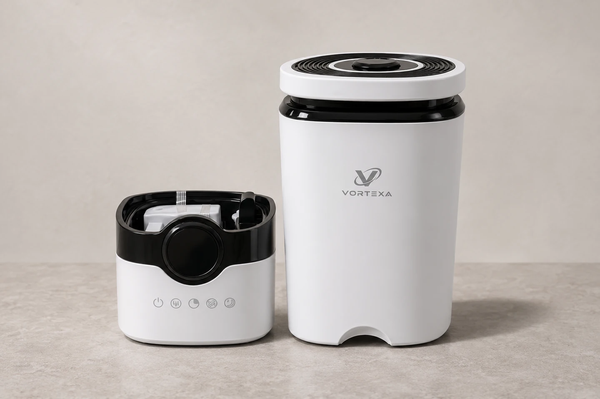
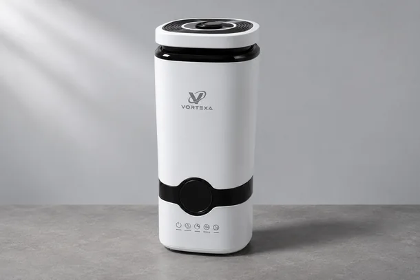

Ауа ылғалдандырғыш T-606
Тұман мен хош иіс
Тұманның үш деңгейінің бірін таңдаңыз. Хош иісті майға бөлек бөлім қарастырылған.
- Алынбалы бак
- 4 л
- Тұман қарқыны
- 3 деңгей
- Бөлек бөлім
- Хош иісті май

Бак тұғырдан шешіледі
Бак тұғырдан тұман шығатын саңылауымен бірге алынады.
Бөлмеге арналған үш баптау
Қарқынды күн ішінде өзгерту
Үш деңгейдің бірін таңдаңыз. Ағынды өзгерту үшін панельден не пульттен басқа деңгейге ауыстырасыз. Қай деңгейде де бактың көлемі төрт литр.
Хош иісті қалаған кезде қосу
T-606 моделінде су мен хош иісті майға бөлек орын қарастырылған. Бүгін тек ауаны ылғалдандырғыңыз келсе, бактағы су жеткілікті. Хош иіс үшін майды арнайы бөлікке құясыз.
Пультті төсектің жанына қою
Таймер жұмыс ұзақтығын белгілейді, ал түнгі режим бөлек қосылады. Құрылғы өз орнында тұрып, пульт қолыңыздың астында болғанда бұл ыңғайлы.
Жұмысты реттеудің үш жолы
Қарқындылық
Ылғалдандырудың үш деңгейінің бірін таңдаңыз.
Ұзақтық
Таймермен құрылғының жұмыс уақытын алдын ала қоюға болады.
Кешке
Бакқа жақындамай-ақ, пультпен түнгі режимге ауыстыруға болады.
T-606 және T-2215
T-606 моделін цилиндр тәрізді багы мен дөңгелек дисплейінен тануға болады.
Екі ылғалдандырғышты салыстыру
Сипаттамалар
Барлық параметрлер 5
- Бак көлемі
- 4 л
- Ылғалдандыру деңгейлері
- 3
- Басқару
- Қашықтан басқару пульті
- Режимдер
- Таймер, түнгі режим
- Хош иісті май үшін
- Бөлек орын
T-606 моделін хош иісті майсыз қолдануға бола ма?
Иә. Бак суға арналған, майға арналған бөлікті қалауыңызша пайдаланасыз. Кәдімгі ылғалдандыру үшін үш деңгейдің бәрін таңдауға болады.
Тұғырдан қай бөлігі алынады?
Жоғарғы цилиндр тәрізді бак бөлек көтеріледі. Тұман шығатын саңылау сол бакта қалады. Дөңгелек басқару панелі бар тұғыр үстелде тұрады.
Төрт литр қанша уақытқа жетеді?
Бұл таңдалған деңгейге байланысты. T-606 үшін сағаттық су шығыны миллилитрмен көрсетілмеген. Белгілі бір уақытқа қанша су керегін есептеу маңызды болса, T-2215 моделінің ең жоғары шығыны белгілі — 280 мл/сағ.
Екі модельдің бактары мен басқаруы бірдей ме?
Екі бак та төрт литр су сыйдырады. Екеуінде де пульт, таймер және түнгі режим бар. T-606 багы цилиндр пішінді, майға арналған жеке бөлігі бар. Тікбұрышты T-2215 моделінің алдыңғы жағынан су деңгейі, дисплейінен ылғалдылық пен температура көрінеді.

Ауа ылғалдандырғыш
T-606
[19 990 ₸]
- [Қоймада бар]
- Жеткізу [1–7 күн]
- Кепілдік [12 ай]
Сатушыға сұрақ қою
Мәтінді көшіріп, сатушыға жіберіңіз. Тауар атауы мен моделі енгізілген.